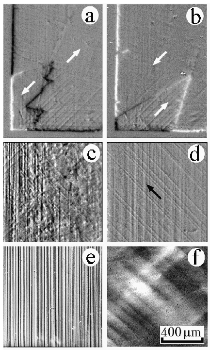

Figure 2: (a, b) MOIF images of domain structure in a deformed unbiased epitaxial NiFe(001) film created during remagnetization along the [110] easy axis. H (applied field) = -2 Oe and +2 Oe in (a) and (b) respectively. Arrows indicate the magnetization directions in domains parallel and antiparallel to the applied field. (c, d) Domain structure in the deformed part of the epitaxial NiO/NiFe(001) bilayer during the [110] unidirectional-axis remagnetization (corresponds to the right-hand branch of the hysteresis loop in Fig. 1a). The arrow indicates the direction of the unidirectional axis and of the applied field. H = +24 Oe (c) and +28 Oe (d). (e) Surface steps associated with screw dislocation slip planes revealed in a reflected light at the NiFe surface in the NiO/NiFe bilayer. (f) Microstress fields caused by the slip planes of the edge dislocations revealed by the photoelasticity method.